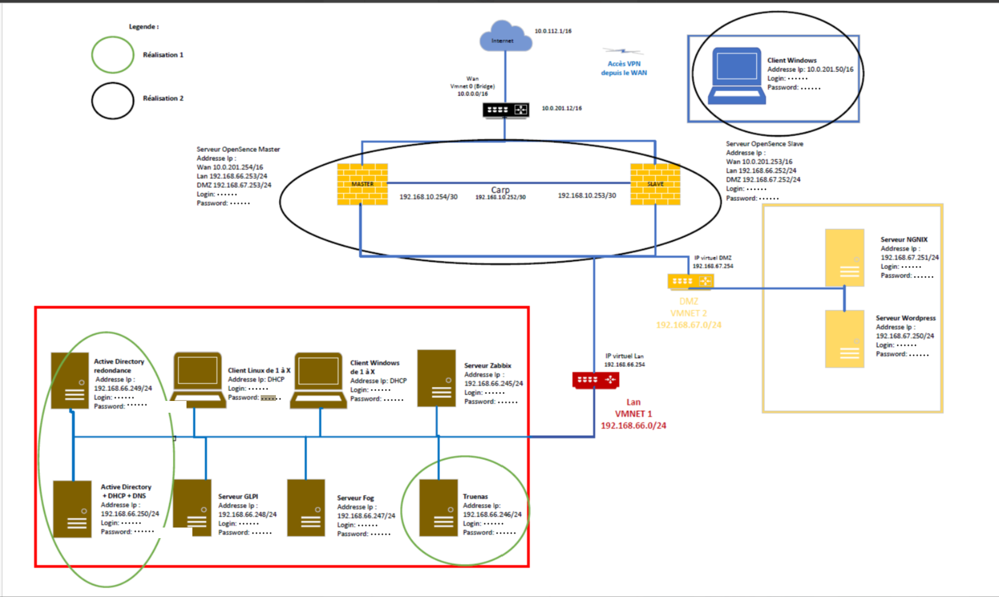

Cette section présente plusieurs projets que j’ai réalisés dans différents contextes. Ils illustrent les compétences techniques et méthodologiques que j’ai pu acquérir et mettre en œuvre.
Projet en cours de réalisation : conception, déploiement et sécurisation d'une infrastructure Linux entièrement virtualisée pour SECURITIS, une PME de 45 salariés. Architecture segmentée en cinq zones (WAN, LAN, DMZ, DATA, BACKUP) reliées par une passerelle Debian assurant le routage et le filtrage avec nftables. Accès distants sécurisés par VPN WireGuard, détection d'intrusions avec Suricata, protection des accès SSH avec Fail2ban, contrôle d'intégrité avec AIDE et traçabilité avec auditd. Sauvegardes chiffrées et automatisées par script Bash et BorgBackup (mode append-only), puis validation par des tests d'intrusion depuis Kali Linux.
Outils utilisés :Projet réalisé en binôme : conception, déploiement et sécurisation d'une infrastructure réseau virtualisée pour une entreprise fictive répartie sur deux sites. Mise en place d'un domaine Active Directory (DNS, DHCP, GPO), segmentation réseau par VLAN, pare-feu OPNsense, serveur web NGINX en DMZ, serveur Syslog centralisé et interconnexion des sites via VPN IPsec. Déploiement également d'un accès distant OpenVPN. Le projet a été validé par des tests fonctionnels et des audits de sécurité.
Outils utilisés :Projet de migration d'une PME de 50 salariés d'un fonctionnement en Workgroup vers une infrastructure Active Directory centralisée, entièrement virtualisée (domaine techservices.local). Mise en place d'un contrôleur de domaine (AD DS + DNS), organisation de l'annuaire en unités d'organisation avec utilisateurs et groupes de sécurité par service, serveur de fichiers avec partages par service, droits NTFS et quotas, intranet IIS avec authentification Windows intégrée, stratégies de groupe (politique de mot de passe, lecteurs réseau) et filtrage des flux par le pare-feu pfSense. Procédures de tests et de validation définies pour chaque service (connectivité, jonction au domaine, GPO, partages, intranet).
Outils utilisés :Projet réalisé en binôme : conception, mise en place et documentation de l'interconnexion sécurisée entre le siège de Marseille et un nouveau site à Paris pour SkyPool. Tunnel VPN site-à-site IPsec (IKEv2, AES-256, SHA-256) entre les deux pare-feux pfSense, services DHCP et DNS (domaine skypool.local) centralisés sur les deux serveurs avec relais DHCP sur le pare-feu de Paris, serveur web Apache2 hébergeant le site vitrine et accessible depuis Paris à travers le tunnel, et règles de filtrage propres à chaque site. Plan d'adressage (172.16.1.0/24 et 172.16.2.0/24), schéma de topologie et procédures de tests (VPN, DHCP, DNS, accès web) documentés dans un cahier des charges technique.
Outils utilisés :Projet en cours de réalisation : conception d'une infrastructure réseau complète avec pare-feu OPNsense en haute disponibilité (CARP), un LAN et une DMZ. Le LAN accueille un Active Directory redondant (DHCP + DNS), les outils de gestion et de supervision GLPI, FOG, Zabbix et le stockage TrueNAS. La DMZ héberge un serveur NGINX et un site WordPress, avec un accès VPN depuis le WAN.
Outils utilisés :
Ce tableau relie chacune de mes réalisations aux compétences du référentiel mises en œuvre. Clique sur le nom d'une réalisation pour aller directement à sa fiche projet.
| Réalisations professionnelles | Gérer le patrimoine informatique | Répondre aux incidents et aux demandes | Développer la présence en ligne | Travailler en mode projet | Mettre à disposition un service | Organiser son développement professionnel |
|---|---|---|---|---|---|---|
| Réalisations en cours de formation | ||||||
| Conception et sécurisation d'une infrastructure LinuxSECURITIS | ✔ | ✔ | ✔ | ✔ | ✔ | |
| Infrastructure & sécurité réseau virtuelTechServices | ✔ | ✔ | ✔ | |||
| Infrastructure Active DirectoryTechServices | ✔ | ✔ | ✔ | |||
| Interconnexion réseau inter-sitesSkyPool | ✔ | ✔ | ✔ | ✔ | ||
| Infrastructure Haute Disponibilité & Supervision LinuxCloudTech | ✔ | ✔ | ✔ | ✔ | ✔ | ✔ |
| Réalisations en milieu professionnel — première année | ||||||
| Calculateur de prix selon la distance | ✔ | ✔ | ✔ | |||
| Site de suivi des paiements des patients | ✔ | ✔ | ✔ | |||
| Recueil des besoins auprès du personne | ✔ | ✔ | ||||
| Autres activités informatiques et réseau | ✔ | ✔ | ✔ | |||